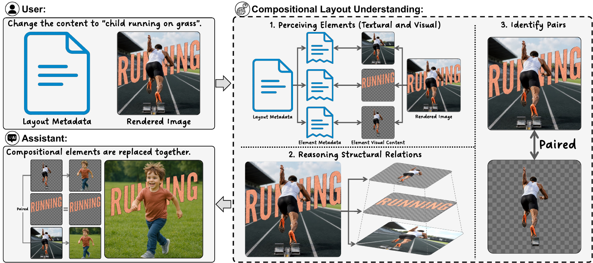
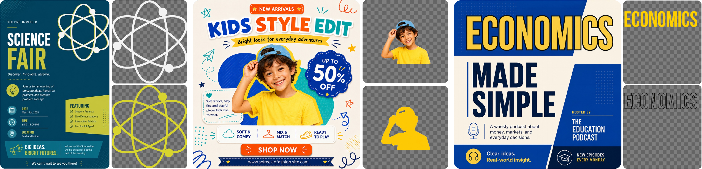
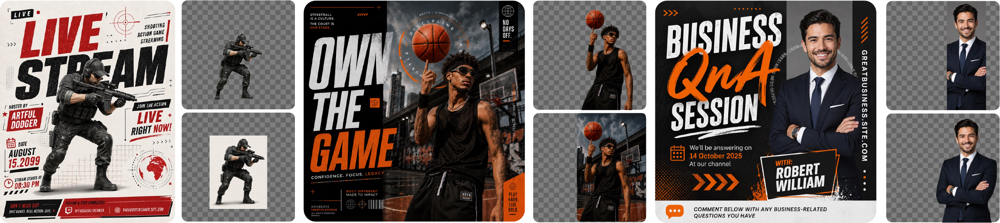
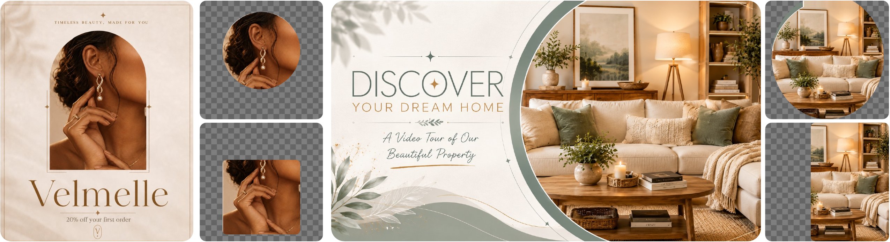
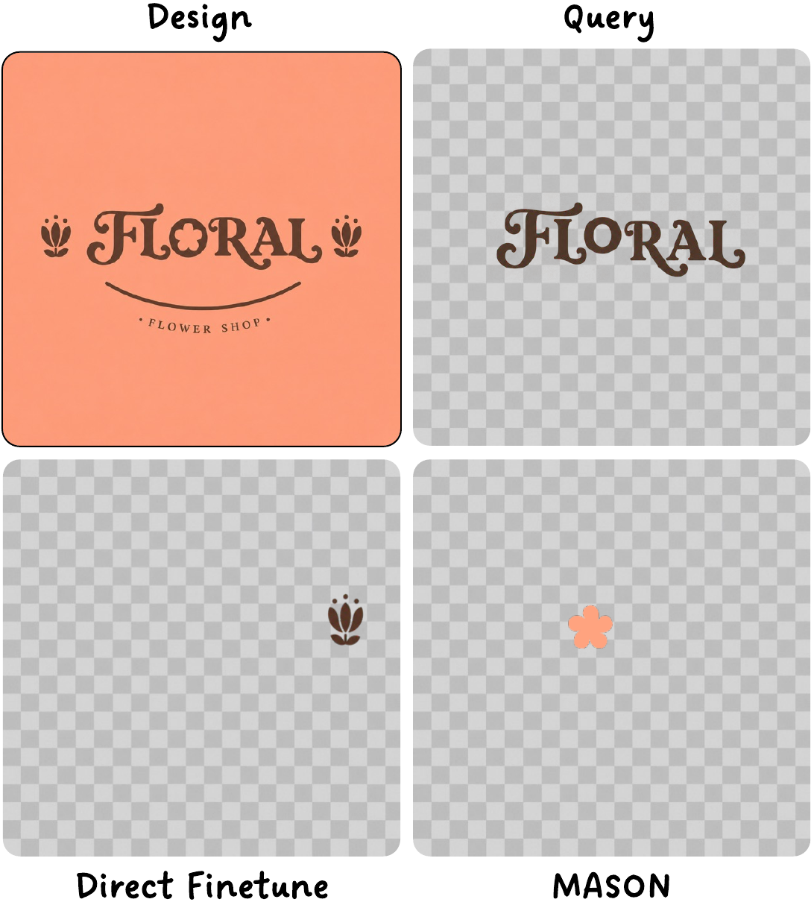
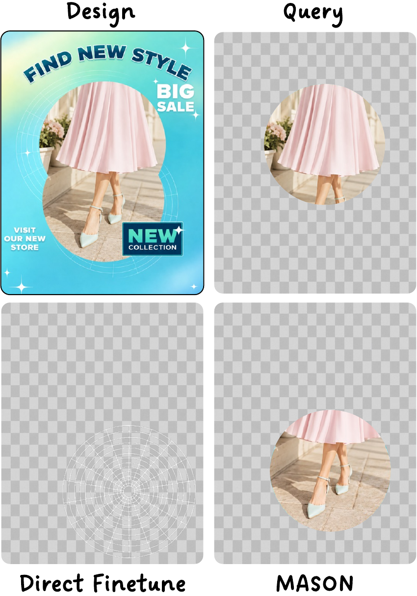
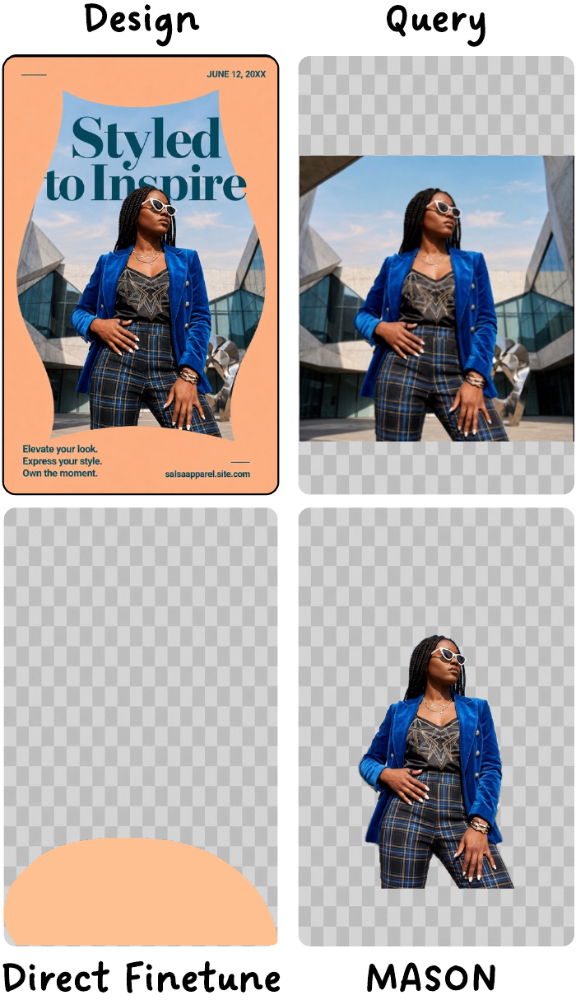
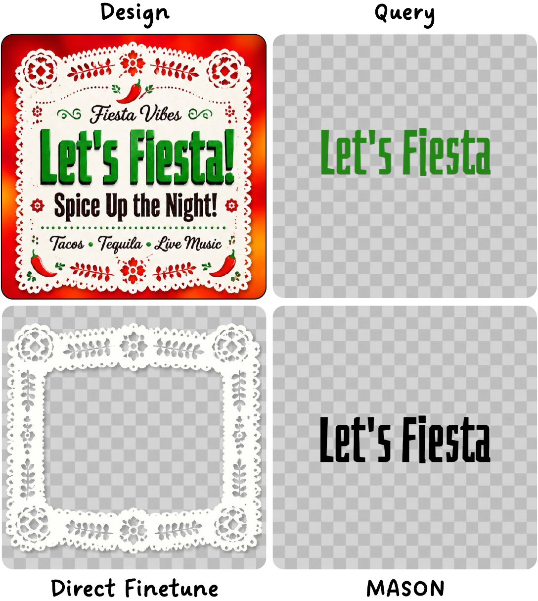

Multimodal Alignment
MA grounds metadata-defined elements to their visual counterparts, reducing semantic drift under visual entanglement.
ECCV 2026
Northeastern University | Adobe Research
A benchmark, training strategy, and evaluation suite for reasoning about layered and entangled graphic design layouts beyond isolated visual elements.

Overview
Layout understanding is central to document analysis, UI creation, and graphic design. Existing vision-language models handle many atomic layouts, but compositional designs require reasoning about visually entangled elements and hierarchical layer structure.
This project introduces compositional layout understanding, presents CoDeLayout, and evaluates MASON, a post-training paradigm that combines multimodal alignment with structural perception.
CoDeLayout

Each CoDeLayout instance contains a high-fidelity rendered design image, structured element-level metadata, and QA-style annotations specifying compositional element pairs and their design intent.
The dataset follows real-world graphic design distributions across overlaying, clipping, blending, and morphing, with manually verified test samples for reliable evaluation.



MASON

MA grounds metadata-defined elements to their visual counterparts, reducing semantic drift under visual entanglement.
SP augments metadata with layer-aware spatial relationships, improving reasoning about hierarchy and inter-element dependencies.
Results
Each category cell reports accuracy with GPT-Score/BLEU/ROUGE in parentheses. Weighted accuracy accounts for category proportions; average accuracy is the unweighted mean across four categories.
| Model | Overlaying | Clipping | Blending | Morphing | Weighted Acc. | Average Acc. |
|---|---|---|---|---|---|---|
| Heuristic Baselines | ||||||
| Max-Overlap | 61.74N/A | 69.70N/A | 23.08N/A | 36.17N/A | 44.27 | 47.67 |
| Nearest-Neighbor | 58.26N/A | 62.12N/A | 23.72N/A | 38.30N/A | 42.44 | 45.60 |
| Open-Source VLMs | ||||||
| Qwen2.5-VL | 66.093.51/3.65/23.94 | 37.882.85/1.16/18.94 | 53.853.37/2.48/22.28 | 36.173.22/2.16/21.42 | 52.60 | 48.49 |
| Qwen3-VL | 86.094.52/7.63/32.77 | 71.213.85/3.81/26.12 | 79.494.11/4.59/28.55 | 55.323.49/2.22/23.04 | 77.08 | 73.02 |
| InternVL-3.5 | 84.354.02/5.66/28.84 | 54.552.93/1.29/19.49 | 70.513.52/2.74/23.38 | 42.553.11/1.70/20.48 | 68.48 | 62.99 |
| LLaVA-OneVision | 56.523.41/2.90/23.21 | 21.212.72/0.71/17.59 | 60.903.24/1.74/21.36 | 29.792.89/0.97/18.82 | 48.95 | 42.10 |
| Closed-Source VLMs | ||||||
| GPT-4o | 83.484.91/10.67/36.34 | 36.364.02/3.22/28.05 | 63.464.66/6.22/34.00 | 65.964.22/5.88/29.89 | 65.10 | 62.31 |
| GPT-5 | 89.573.62/4.55/23.95 | 62.122.99/1.40/19.18 | 79.493.25/2.20/21.25 | 56.923.51/1.98/23.97 | 76.56 | 71.62 |
| GPT-o3 | 93.913.35/3.26/22.08 | 63.642.81/1.25/18.46 | 79.493.12/2.25/19.93 | 68.093.46/1.87/23.73 | 79.68 | 76.28 |
| Gemini-2.5-flash | 81.744.36/6.88/31.18 | 53.033.54/2.96/23.87 | 72.443.78/3.61/25.14 | 55.323.81/2.85/25.66 | 69.79 | 65.63 |
| Gemini-2.5-pro | 90.434.02/4.92/28.48 | 45.453.77/2.99/25.79 | 75.003.89/3.53/26.33 | 59.573.79/3.15/25.70 | 72.65 | 67.61 |
| Ours | ||||||
| Direct Finetune (Full data) | 93.046.42/30.87/51.63 | 83.334.73/10.89/35.08 | 94.875.14/11.69/39.53 | 65.964.96/11.23/37.00 | 88.80 | 84.30 |
| MASON (30% data) | 92.176.29/29.92/50.22 | 86.364.81/10.69/35.68 | 93.594.86/9.80/36.34 | 72.344.69/9.95/34.44 | 89.32 | 86.12 |
| MASON (Full data) | 95.656.62/31.87/52.99 | 90.914.93/11.74/36.27 | 95.515.22/11.84/39.66 | 70.215.13/11.60/38.77 | 91.66 | 88.07 |

MASON full data improves weighted accuracy over GPT-o3.
MASON surpasses full-data Direct Finetune with type-balanced subsampling.
MASON reaches the strongest clipping accuracy, where layer reasoning is critical.
DF denotes Direct Finetune, MA denotes Multimodal Alignment, and SP denotes Structural Perception.
| Model | Overlaying | Clipping | Blending | Morphing | Weighted | Average |
|---|---|---|---|---|---|---|
| DF | 86.09 | 74.24 | 80.77 | 72.34 | 80.21 | 78.36 |
| DF + MA | 87.83 | 81.82 | 81.41 | 70.21 | 82.03 | 80.32 |
| DF + SP | 89.57 | 83.33 | 82.69 | 74.47 | 83.85 | 82.51 |
| MASON | 86.96 | 81.82 | 83.97 | 80.85 | 84.11 | 83.40 |
Comparable performance across grounding models indicates that the gains come from the alignment paradigm.
| Grounding VLM | Weighted | Average |
|---|---|---|
| GPT-4o | 91.6% | 88.1% |
| Qwen3-VL (direct) | 90.7% | 87.4% |
| Qwen3-VL (script) | 91.1% | 88.1% |
Removing visual features produces a substantial drop, showing that metadata alone is insufficient.
| Model | Weighted Visual | Weighted No Visual | Average Visual | Average No Visual |
|---|---|---|---|---|
| DF | 88.8% | 60.9% | 84.3% | 58.1% |
| MASON | 91.6% | 65.1% | 88.0% | 62.8% |
Case Study




Release
Citation
@inproceedings{huang2026beyond,
title = {Beyond Atomic Layouts: Compositional Design Understanding with Vision-Language Models},
author = {Huang, Yiyang and Wang, Zhaowen and Jenni, Simon and Shi, Jing and Zhang, Yitian and Wang, Yizhou and Fu, Yun},
booktitle = {European Conference on Computer Vision (ECCV)},
year = {2026}
}